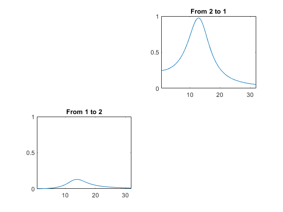

close all
noise_dev1=0.1;
noise_dev2=0.01;
secs=1;
ns=1000;
t=[1/ns:1/ns:secs]';
N=length(t);
d=2;
f1=10;
y=0.5*sin(2*pi*f1.*t)+sin(2*pi*15*t);
y=y/std(y);
delay=50;
delay_in_samples=ns*delay/1000;
y1=y+noise_dev1*randn(N,1);
y2=[y1(delay_in_samples:end);zeros(delay_in_samples-1,1)];
y2=y2+noise_dev2*randn(N,1);
y=[y1,y2];
disp(sprintf('Signal 2 leads signal 1 by %1.2f ms',delay));
h=figure;
set(h,'name','Data');
subplot(2,1,1);
plot(t,y1);
title('Signal 1');
subplot(2,1,2);
plot(t,y2);
title('Signal 2');
xlabel('Seconds');
p=10;
freqs=[0.5:0.5:32];
mar = spm_mar(y,p);
mar = spm_mar_spectra (mar,freqs,ns);
h=figure;
set(h,'name','Granger Causality');
for k=1:d,
for j=1:d,
if ~(k==j)
index=(k-1)*d+j;
subplot(d,d,index);
plot(mar.f,mar.gew(:,k,j));
title(sprintf('From %d to %d',j,k));
end
end
end
h=figure;
set(h,'name','Proportion of Variance Explained');
for k=1:d,
for j=1:d,
if ~(k==j)
index=(k-1)*d+j;
subplot(d,d,index);
plot(mar.f,mar.pve(:,k,j));
title(sprintf('From %d to %d',j,k));
axis([min(mar.f) max(mar.f) 0 1]);
end
end
end
Signal 2 leads signal 1 by 50.00 ms
